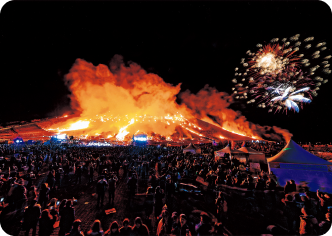
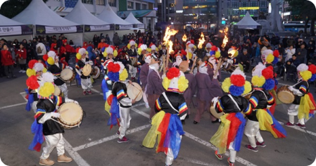

Date : 2019. 03. 07 ~ 2019. 03. 10
Main Program :
- Wildfire : Jeju's old ranching culture that eliminates harmful insects
- Making a wish moon house : Make a moon house to make a wish
- Torch march: Climb Saebyeol Oreum with a torch to pray for the safety of a warrior
- Fireworks, Jeju traditional culture performance, media facade show

